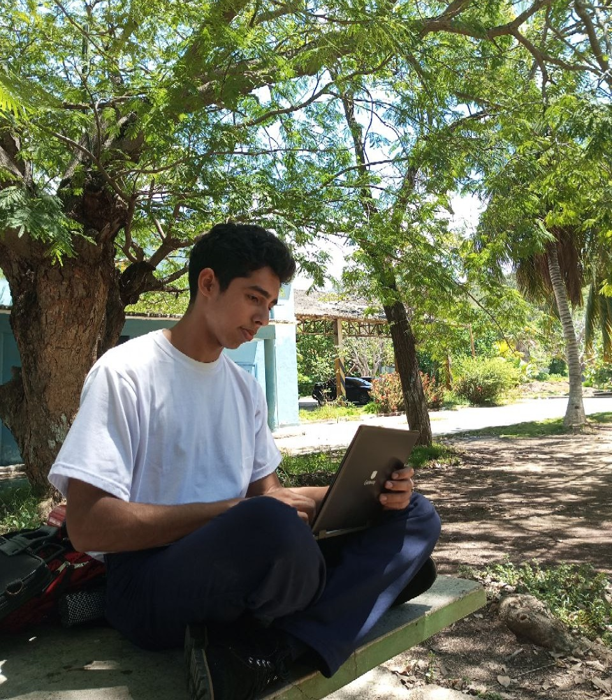

Mi nombre es Josafat Quijada, soy un desarrollador web junior; especializado en el Front-End, pues poseo conocimiento sólido en HTML, CSS y Javascript conjuntamente. La programación es mi mayor pasión, no dudes en contactarme si necesitas ayuda en esto.
Soy:
- Detallista
- Puntual
- Altamente lógico
- Investigador
Es más, déjame mostrarte lo que sé hacer; las acciones hablan por si mismas:
Proyectos
Un pequeño recopilatorio de mi saber desarrollados en varias webs funcionales